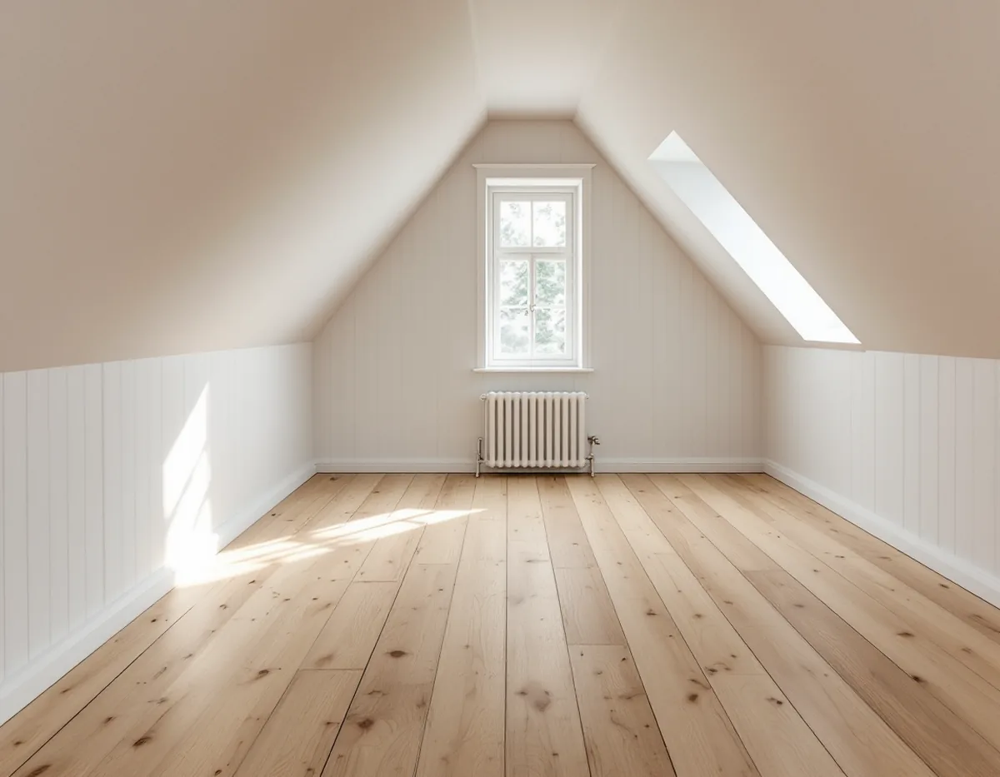
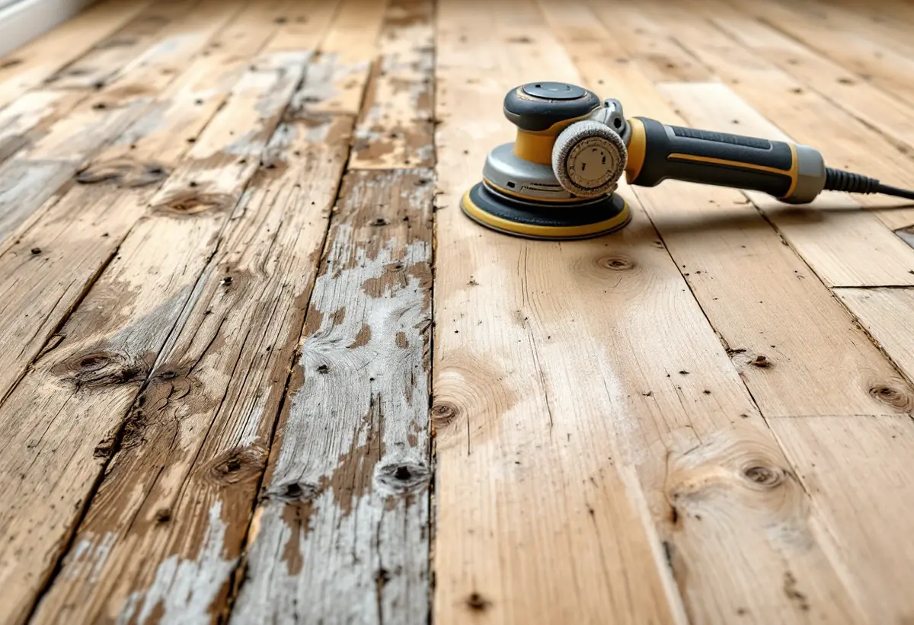

Platsbesök
Vi lyfter en list, letar efter svikt och spik och tittar på hur mycket trä som finns kvar.
I en villa från trädgårdsstadens första decennier kan det ligga brädgolv som har hunnit med både mattor, färg och lack. Går de att slipa fram får huset tillbaka ett golv som har legat där sedan början. Geal Entreprenad AB slipar och ytbehandlar trägolv i Enskede, och vi börjar med att ta reda på om golvet tål en slipning till.

Gamla Enskede blev enligt stadens vägledning Varsam utveckling av småhus- och villaområden Stockholms första trädgårdsstad. Området anlades efter stadsplanedirektören Per Olof Hallmans stadsplan från 1908, och typritningar togs fram för ett enhetligt uttryck. Den mest kända är den så kallade Enskedestugan. Huvuddelen av husen i trädgårdsstäderna var friliggande enfamiljshus i ett plan med delvis inredd vind.
I vägledningens tabell är Gamla Enskede både riksintresse och kulturhistoriskt värdefull miljö och har ett äldre miljöprogram. Enskededalen, Enskede Gård och småstugeområdet Enskedefältet räknas också som kulturhistoriskt värdefulla miljöer. Vägledningen handlar om husens yttre och om gatumiljön. För golvet inomhus är frågan i stället hur mycket av det gamla träet som går att spara.

Ett massivt brädgolv består genomgående av samma träslag. Golvbranschen skriver att det kan renoveras i hög utsträckning och att det är tjockleken mellan ytan och not och spår som sätter gränsen. Har golvet slipats många gånger förut syns det i springorna, och där mäter vi innan vi lovar något.
Golvet ska också ligga stilla. Sviktar undergolvet eller golvkonstruktionen kan slipningen enligt riktlinjerna SLIP 22 ge ondulering, alltså en vågig yta. Går svikten inte att åtgärda före slipningen ska du som kund få veta risken innan arbetet börjar. I ett gammalt hus lyfter vi därför gärna en list för att se hur brädorna ligger.
Spikar som sticker upp tas bort före slipningen. Enligt SLIP 22 kan de förstöra slippappret och ge gnistor med risk för dammexplosion i dammpåsen.
Golvbranschen skiljer på två sorters ljud. Enstaka knäppningar som inte kommer tillbaka när man kort därefter går samma väg igen beskrivs som en naturlig del av ett trägolvs karaktär. Knarr som hörs varje gång golvet belastas, över en större yta eller i gångstråket, kan bero på ett ojämnt undergolv, på att golvet sitter i spänn mot väggar eller fast inredning eller på hög luftfuktighet som får brädorna att svälla och gnida mot varandra.
Springor mellan brädorna hänger ihop med inomhusklimatet. Massiva trägolv krymper när luften är torr och sväller när den är fuktig, och Golvbranschen rekommenderar 15–25 grader och 30–60 procents relativ luftfuktighet. Enligt SLIP 22 ska golvet inte ytbehandlas när luftfuktigheten ligger utanför 30–60 procent eller fuktkvoten i träet utanför 6–10 procent, eftersom rörelserna då kan ge sprickor i spacklade fogar.
Därför lägger vi slipningen i en period när huset har ett jämnt klimat och mäter fuktkvoten innan lacken stryks.
Slipningen görs i tre steg. Grovslipningen tar bort all tidigare ytbehandling och jämnar till golvet, normalt med korn 36–50. Mellanslipningen görs i två steg med korn 60–80, och kanterna slipas med något grövre papper än resten så att strukturen blir lika. Slutresultatet ska motsvara bandmaskin med korn 100 för barrträ och 120 för lövträ, och finslipningen görs i träets längdriktning.
Väljer du lack ska ett starkt sugande träslag som furu enligt LACK 22 få en extra topplackning. Lack för lätt slitage stryks annars tre gånger, och golvet mellanslipas efter första strykningen.
Föredrar du lut, såpa eller olja på ett furugolv beskrivs det under golvläggare i Enskede. Är golvet för slitet för att slipas går vi igenom alternativen på sidan om golvläggning.
Vi lyfter en list, letar efter svikt och spik och tittar på hur mycket trä som finns kvar.
Slipning, lagning av brädor och vald ytbehandling redovisas var för sig.
Spikar tas bort, lösa brädor fästs och fuktkvoten i träet mäts.
Gammal färg och lack slipas bort och golvet jämnas till.
Finare papper i två steg, kantslip längs väggarna och puts i hörnen.
Lack med en extra topplackning på furu, eller olja om du hellre vill det.
I ett småhus räknar Skatteverket slipning av golv som rotarbete.
Avdraget är 30 procent av arbetskostnaden, högst 50 000 kr per person och år och högst 75 000 kr tillsammans med rutavdrag. Material och resor ger inget avdrag. Avdraget dras direkt på fakturan.
Golvytan, hur många lager gammal färg eller lack som ska bort, hur många brädor som behöver lagas och vilken ytbehandling du väljer. Efter ett gratis platsbesök får du ett skriftligt kostnadsförslag.
Parkett, trägolv, klinker och slipning.
Golvläggning i Stockholm →Takbyte, takbesiktning och plåtarbeten.
Takläggare i Enskede →Trädgårdsstad med lertegel.
Takrenovering i Enskede →Typhus i trä, träbjälklag och bostadsrätt.
Badrumsrenovering i Enskede →Byggplatsen, gatan och träden.
Byggföretag i Enskede →Trähus, putsade typhus och småstugor i Enskede.
Fasadrenovering i Enskede →Lut, såpa och olja på fur och gran.
Golvläggare i Enskede →Typhus, dubbelhus och småstugor.
Köksrenovering i Enskede →Trädgårdsstad, egnahem och småstugor i Enskede.
Målare i Enskede →Snörasskydd, rännor och verandaplåt i Enskede.
Plåtslagare i Enskede →Verandor, entréer och bodar i trädgårdsstaden.
Snickare i Enskede →Tapet i vindsrum och snedtak.
Tapetsering i Enskede →Små tomter och riksintresse.
Tillbyggnad i Enskede →Renovera innan ni flyttar in.
Totalrenovering i Enskede →